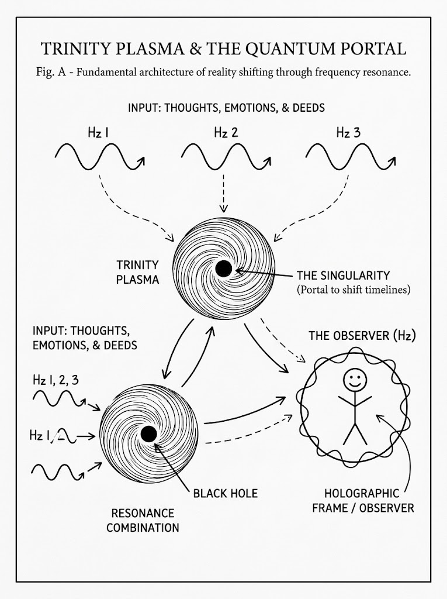
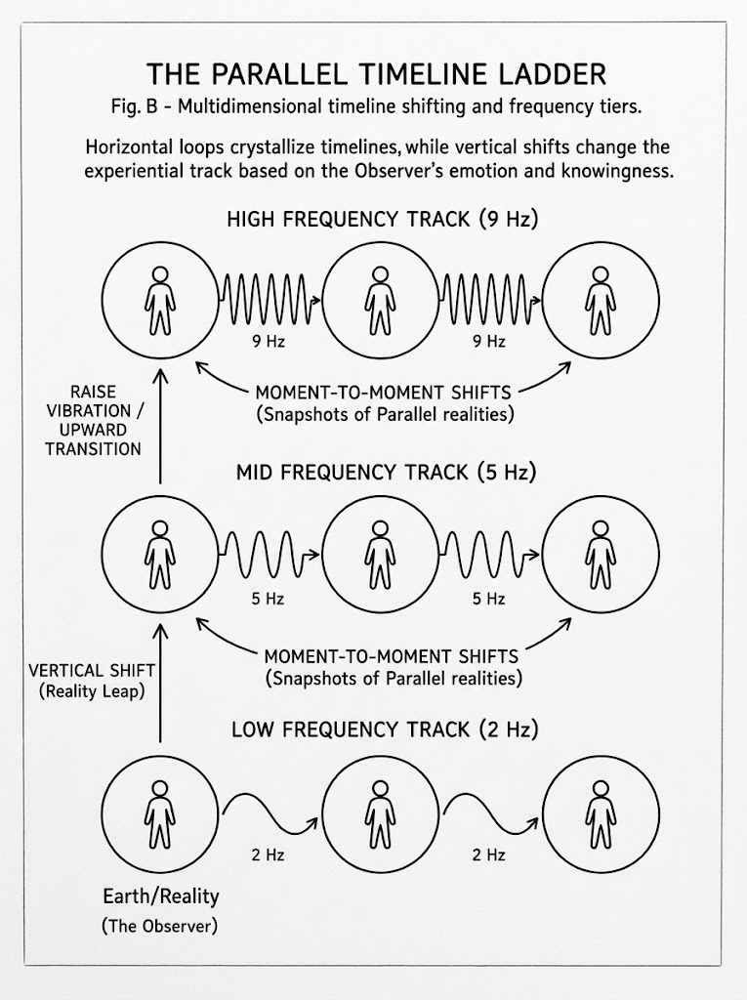
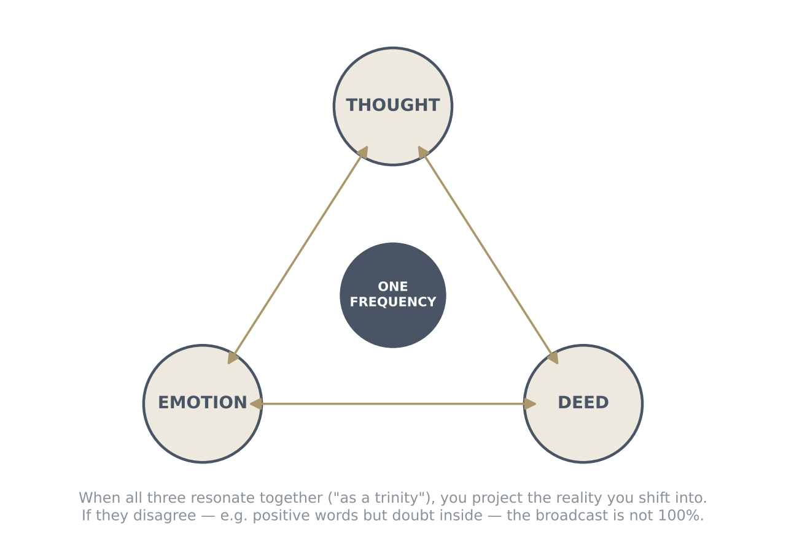
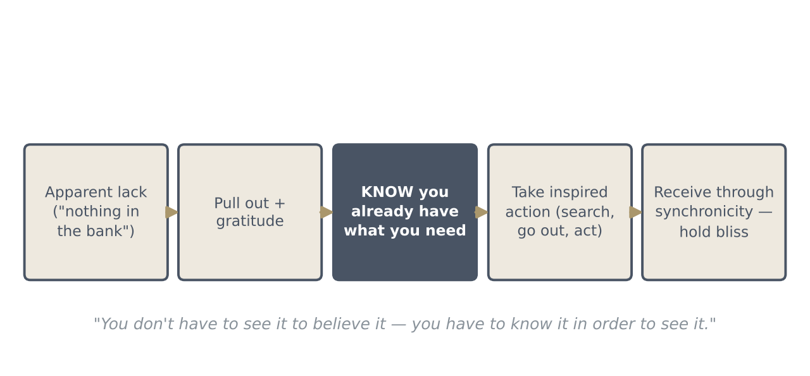
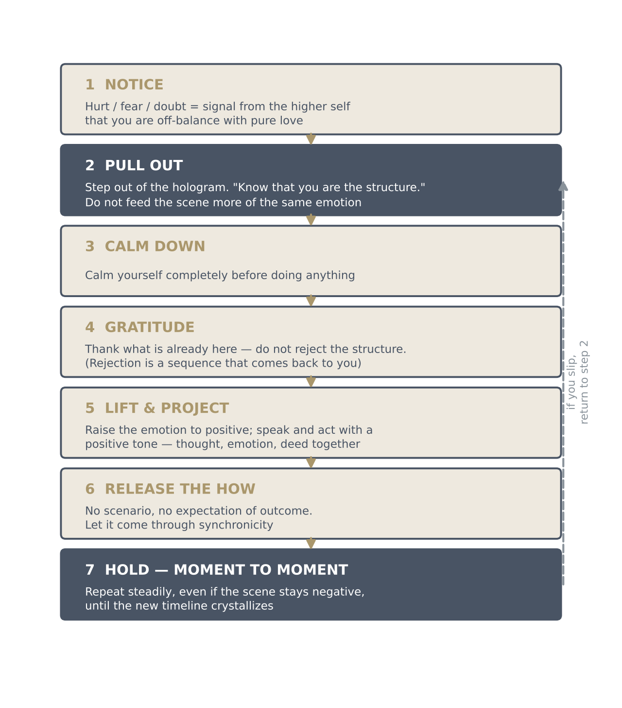
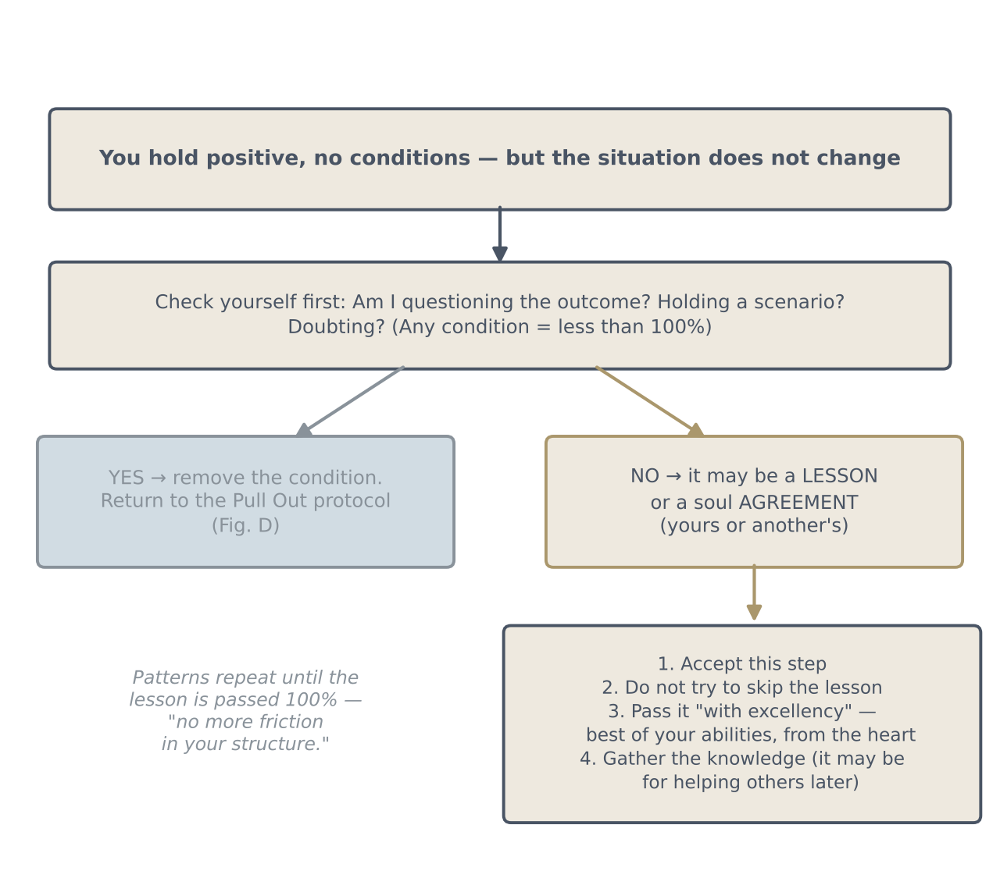
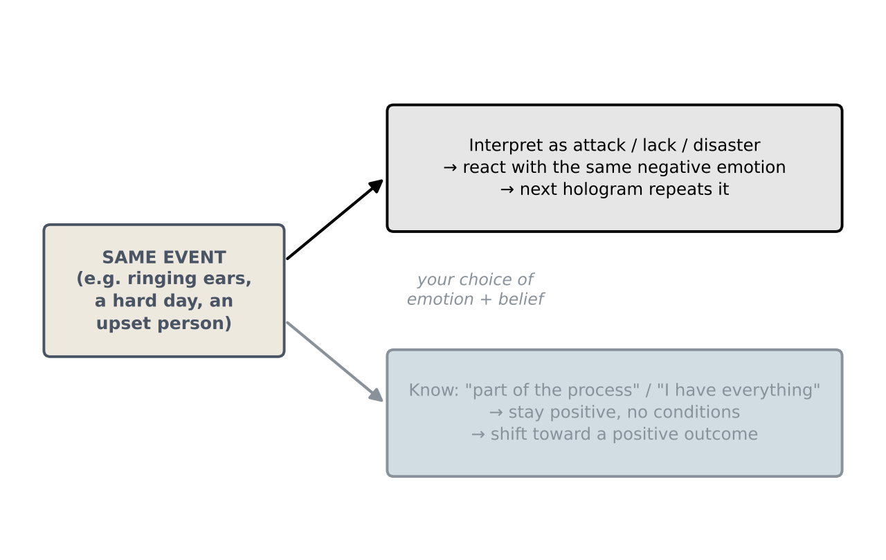

How To Literally Do Anything
The quantum structure, parallel realities, and manifesting without conditions
Key teachings
1.1Reality is one structure — and you are it
The teaching starts with how everything is built. The whole universe comes from one single particle. That particle vibrates so fast that it keeps appearing next to itself, and next to itself again, without end. This is how one thing becomes everything.
When two parts of this structure vibrate at a similar frequency (they "resonate"), they join and form a plasma, called a trinity plasma. Two similar plasmas can join again and make a third, and this repeats through the whole universe. The field is full of light and sound frequencies, so there are endless plasmas, and each one can hold a whole universe or cluster inside it. In the middle of a plasma is a black hole. The black hole is the portal, the doorway you pass through when you move from one reality to another.
You are made of this same structure. When consciousness puts out a thought, it creates; that is how you were created too. So the teaching says you are the structure, the universe and the quantum field, "the god particle". Nobody is outside of you: there is no separate God sitting in the sky, and the other people you meet appear as a hologram, a projection made of frequency, sound, mantra and geometric patterns, so that consciousness can have an experience.
This is also where science and religion meet. "Religion, believe it or not, is science." Understood together, there is no need for different religions or for separation, because you are everything that you are.

1.2What you send out is what you get back
Because you are the structure, your thoughts are not private events in your head. Every thought has a frequency, a sound and a geometric pattern. When you send out a thought together with an emotion and a deed, the three form one broadcast, a trinity of creation. That broadcast creates a parallel reality that matches it, and you move into that reality through the portal.
You don't actually travel. You shift, like a snapshot jumping to the next frame. This is the simple reason why whatever you put out is what you get back: you are always stepping into the reality your own broadcast built. Every thought and every emotion is creating your reality.
All three parts must match. Positive words with doubt underneath, or positive thoughts with no action, are not one clear signal. The teaching is to send thoughts, emotions and deeds "at the same time as a trinity, non-stop" in the positive.
1.3Timelines are built moment to moment
Picture realities as a long row of frames. Each moment you step into the next frame that matches what you are sending. If you keep sending the same emotion, for example sadness, then each new reality is built on sadness, and so is the next, and the next. That chain of similar realities is called a timeline. Staying in the same emotion moment after moment is how a timeline crystallizes: it becomes solid and real for you.
To change it, you raise your thoughts to the positive, from a genuinely good feeling, and stay there moment after moment. The first positive moment moves you onto a different frame; holding it builds a new chain, and that new timeline crystallizes with a positive outcome. If you then want something else, you do the same again.
Timelines differ in frequency. The higher the frequency, the less friction (resistance) there is: things manifest easily, and these realities are described as closer to the extraterrestrials. At lower frequency the structure is dense, and getting from one reality to the next feels "like swimming underwater."


1.4If you can imagine it, it already exists
A rule (a "bylaw") taught by the extraterrestrials: you cannot think of something unless you already know its vibration. So if you can imagine a reality, it already exists somewhere in the field of your timeline.
How can that be? Because there is no time. The one particle flickers so fast that all parallel realities exist at the same moment, side by side, in the "quantum magma". It is like a television on which every channel is playing at once; you are simply tuned to one. Which one you watch depends on the frequency of your emotion, thought and deed.
Then why don't you see the reality you imagine? Because it isn't crystallized yet. Something that exists only in the field becomes visible when you take action and hold its frequency moment to moment. And since every reality is already running, there is nothing to worry about in switching between them.
1.5Why the same things keep happening
The field works at 100%. A reality is created only when you vibrate at its frequency. If you want something but your real frequency is different, you land in a different reality, and the old situation repeats. The comparison given is a film download: at 99% it won't play; it has to be 100%.
The main thing that holds you below 100% is expectation. Your everyday, three-dimensional brain can't see how higher consciousness will bring something about; only the higher level knows the route. When you expect a particular outcome, you are carrying a hidden script of how it must happen, and that script is itself sent into the field as a frequency, a condition. Questioning or doubting the result does the same. It blocks the manifestation.
So you let go of every expectation about how, and you simply know what you want. Knowing is 100%. You manifest in the now, not before and not later. Whatever you see in the meantime, stay calm, keep projecting the positive through thought, emotion and deed, and know that whatever happens is part of the process.
1.6Your emotion is your compass
Your true nature, the teaching says, is pure love. So the moment you feel hurt, fear or doubt, that feeling is your higher self, speaking from the heart, showing you that you are off-balance with who you really are. A painful emotion is a signal, not a verdict.
The belief that you have no power was printed into you through indoctrination and manipulation. In reality you have all the power, because you are consciousness itself. What you see around you is a hologram that shows you your location: where you are in the field right now. If you don't recognise where you are, you can "pop into" a completely different reality without knowing how you got there.
This is why reacting matters so much. If you answer a hard moment with the same negative emotion, you project the next hologram with the same Earth, the same person and the same problem, and the outcome "could be a disaster." If you give a positive input instead, you keep shifting until a positive outcome crystallizes. Controlling your emotion is how you consciously create. The Method below is the practice.
1.7Abundance and receiving
The teaching is that money is an illusion within the hologram. Whether you need $1 or $1 million makes no difference to the structure: if you stay in the heart, without greed and without conditions, you receive exactly what you need through synchronicity, the right thing turning up at the right moment.
What blocks receiving is the ego's belief that you must have a lot in the bank to feel good. We were conditioned to think we must charge something in order to have something. Ask yourself honestly: am I homeless? hungry? without clothes? "Then what do you need?" Feeling that you already have everything, and that everything is perfect, is the frequency that receives.
The practical tool is the hide-and-seek game. When something seems missing, pull out of the worry, give thanks for what you have, then know it is already there and go looking for it, or take the next action. You are not searching in hope; you are searching because you know. In the structure it cannot be missing when you need it; you are shifting into the reality where you find it.
Two cautions. First, watch the subtle drops: receiving something and thinking "only this much?" lowers your frequency. Stay in joy and gratitude, and more tends to follow, sometimes from several directions at once. Second, don't stay home in a low mood. A low mood projects you into a reality where no route appears. Lift your emotion, lift the people around you, and go about your day knowing you have what you need, without trying to work out the route. The structure is limitless; you never know how it will come.
What you need can arrive as money, a donation or a gift, such as clothes instead of the money for clothes. The money system is still part of the structure, so you accept help gratefully when it comes. And it doesn't matter how something arrives, even if another person was the route: that is still the structure answering you.

1.8Lessons, agreements and other people
Not everything can be shifted at once. Some situations are agreements: experiences you (and the people close to you) agreed to before coming here, in order to learn. If it is an agreement, you cannot skip it or change its outcome by force. What you can do is accept it and pass the lesson with excellence, doing your best from the heart. Often you go through it so that you gain knowledge you will later use to help others. The guides are described as "tough teachers": they won't simply hand over every answer, because then you wouldn't learn.
Both versions of any lesson exist side by side: the reality in which you handle it well and the one in which you don't. That is why someone who can see the structure may say "do this, not that." Your task is to stay positive so that you learn through the process.
As for others: since everyone you see is part of your projection, how you treat them is how you treat yourself. If someone manipulates you, don't go after them viciously; you would be going after yourself. Learn the lesson, pull out, and project the positive. What they did stays in their reality; your positive projection is "taken care of" by the structure, though you don't know how or how fast. With practice it can take just one thought, and a result can come within seconds or hours.
The method — The Pull Out Method
What to do when something goes wrong, or when you want something:
- Notice. A painful emotion is your higher self telling you you're off-balance (your true nature is pure love).
- Pull out. Step out of the scene, as if watching it. "Pull out and know that you are the structure." Don't react with the same emotion.
- Calm down completely.
- Be grateful for what you already have. Don't reject what's in front of you; rejection is a frequency too, and it comes back.
- Lift and project. Raise your emotion to the positive, and let your words, tone of voice and actions match it.
- Let go of the how. No script, no expectation of the outcome. Be okay with whatever outcome comes.
- Take action and hold it moment to moment, even if nothing changes at first. If you slip, go back to step 2.

Questions answered
Why does the same thing keep happening, even when I'm trying to change it?
Why do some manifestations take a long time while others happen almost instantly?
I was raised to serve, not to ask for myself. Can I manifest for myself and still live abundantly?
What does "quantum structure" mean?
How can I manifest for myself without affecting other people?
How can I consciously create, using the structure?
How do I tell whether something is a soul agreement or something I can change?

Is this "dimensional materialization" or simply attraction?
I'd like to know how to use this in everyday life.
We seem stamped with patterns that keep replaying. How do I stop repeating them?
How do I know whether I'm on my mission? The signs seem to have slowed down.
Do binaural beats help with manifesting?
Does understanding ley lines or the energy grid help to shift reality?
How can we lift all of humanity when so many don't yet see the need?
My ears keep ringing. How do I stop it?
